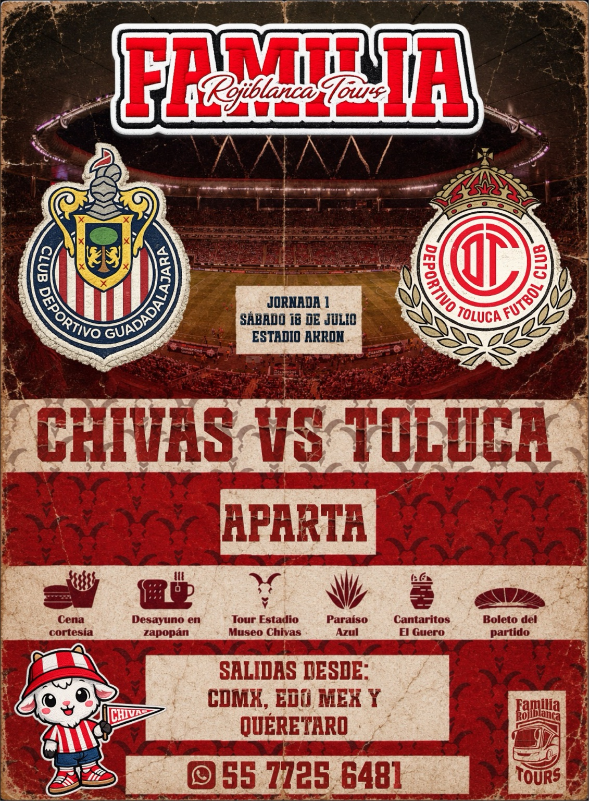

CHIVAS · CHIVAHERMANOS · PEYE MATCHDAY
CHIVAS.
GUADALAJARA
SE VIVE AQUÍ.
Somos el viaje del Chivahermano: carretera, Jalisco, Estadio Akron, afición y fútbol. Tú lleva la pasión; PEYE arma la experiencia.
SCROLL PARA VIAJAR ↓
CHIVASESTADIO AKRON · GUADALAJARA
PEYE TOURS ✦ CHIVAS ✦ CHIVAHERMANOS ✦ GUADALAJARA ✦ AKRON ✦ MATCHDAY ✦ PEYE TOURS ✦
VIVE MÁS QUE UN PARTIDO
PRÓXIMAS
EXPERIENCIAS.
Viajes pensados para disfrutar el destino, el ambiente y cada minuto del viaje. Elige el partido. Nosotros armamos la experiencia.

PEYE / 01
MATCHDAY · GUADALAJARA
CHIVAS
VS TOLUCA
Un viaje completo a Guadalajara con partido, desayuno, recorrido y experiencias locales.
CHIVAS EN MOVIMIENTO
VIVE LA
AFICIÓN.
Más que ver el partido: sentir el Akron, cantar con la gente y entrar en modo Chivahermano desde antes de salir de CDMX.
01 · AKRON · BIENVENIDOS A CASA
PEYEEL AKRON
EL AKRON
TE ESPERA.
La experiencia empieza cuando la afición se encuentra. Mira, siente y luego ven a vivirlo con PEYE.
VER MATCHDAYS ↗QUE SE SIENTA EL AKRON.
PEYE MATCHDAY · ESTADIO AKRON
EL PARTIDO ES
SOLO EL COMIENZO.
Haz clic en un partido.
La experiencia se abre.
La experiencia se abre.
APERTURA 2026 · LOCALAKRON / GUADALAJARAPEYE TOURS ↗
SCROLL STORY · CDMX → JALISCO
NO ES DESTINO.
ES EL CAMINO.
Sube al viaje. Nosotros nos encargamos del resto.
Horas de música, amigos y la emoción de acercarnos.
Tradición, paisaje y el sabor que hace distinto el viaje.
Luces, estadio, fútbol. Aquí empieza la historia.
JALISCO · EXPERIENCIA
DE AGAVE
A ADRENALINA.
Un lenguaje visual inspirado en Jalisco: agave, tierra, noche y fútbol. Mueve el cursor sobre la escena.
PEYEJALISCO
ELIGE TU PUNTO DE PARTIDA
NUESTRAS RUTAS.
Salidas pensadas para facilitar tu viaje desde distintos puntos.
PEYE STORIES
NO SOLO LO
CUENTES. VÍVELO.
DEL CAMINO AL ESTADIO: ASÍ SE VIVE UN PEYE TOUR
LEER HISTORIA →5 MOMENTOS QUE TIENES QUE VIVIR
LEER HISTORIA →COMER, CANTAR Y VIAJAR
LEER HISTORIA →PEYE GALLERY
LA EXPERIENCIA
EN IMÁGENES.
VIAJA.
GRITA.
VIVE.
GRITA.
VIVE.
¿LISTO PARA IR?